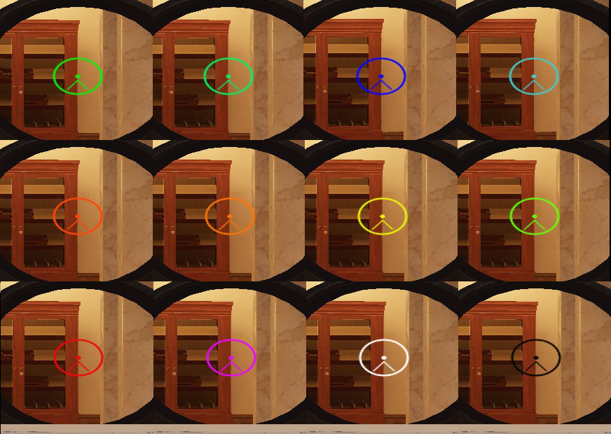

Use this test to find out how fast you respond to different colors. Epilepsy warning, because of flashing colors.
Instructions (click here)
1) Choose a background color below - the background color of this site will change to the selected color randomly
2) Choose the amount of iterations (to get a good average value)
3) When you notice the color change, click anywhere as fast as possible
Do the test more than once and on different days to get good average values.

uses the same colors as in R6
What does science say? (click here)
Science hints to red and green being the best colors [1green > red][2red > green][3red > green][4red = green > yellow].
Blue and especially yellow perform worse (less receptors in the eyes for blue colors, and yellow is a mix) [4].
Please note: You reacting a bit faster to red doesn't automatically mean a red scope is better for you. Ingame a red scope might (or might not) distract you a little more than a green, or pink one. Another factor is, what color helps you track opponents better - AimLab might help you here.
Never test too many colors in a row. Your eyes need a break. Made with <3 by @kurtextrem w/ psychology knowledge from university.